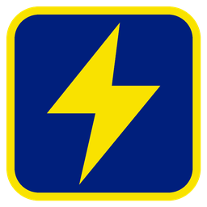
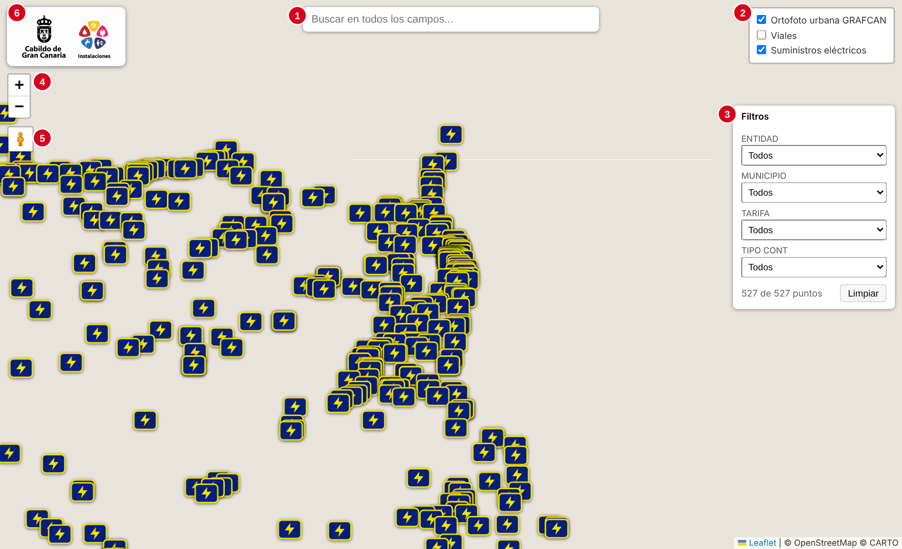
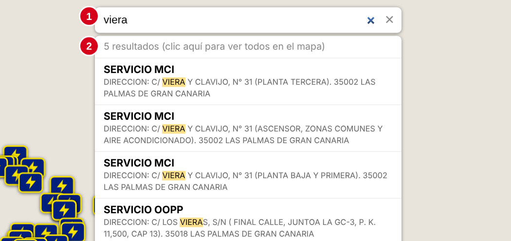
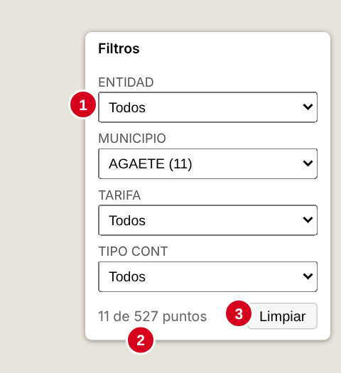
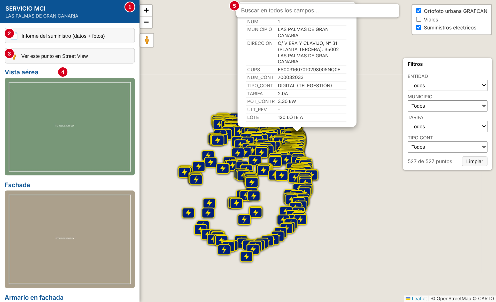
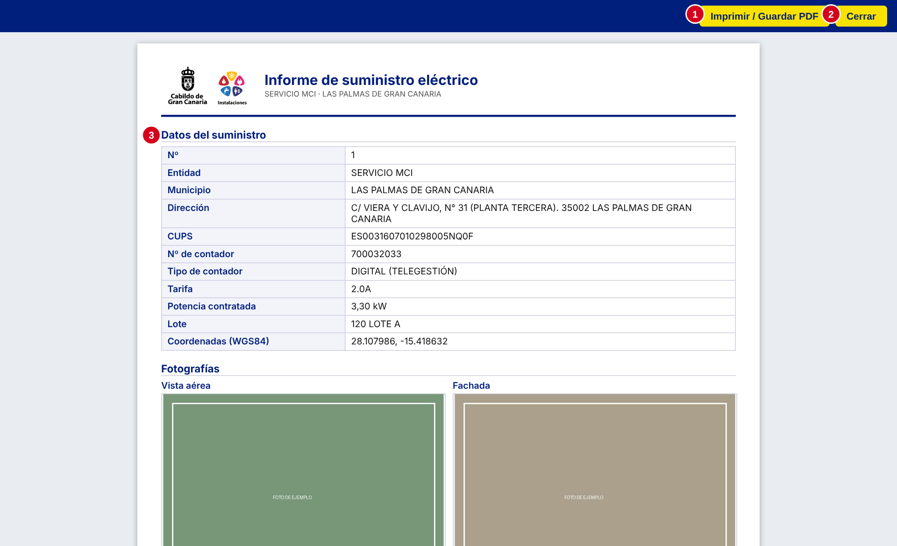

Es un mapa que muestra los 527 suministros eléctricos de las instalaciones del Cabildo de Gran Canaria. Cada suministro se representa con un icono azul con un rayo amarillo.
Para cada suministro puedes consultar: entidad, municipio, dirección, CUPS, número y tipo de contador, tarifa, potencia contratada y lote, además de cinco fotografías (vista aérea, fachada, armario en fachada, armario de medida y equipo de medida). También puedes sacar un informe en papel o PDF.
Haz doble clic en el icono del Escritorio. El visor se abre en una ventana propia, sin barra de direcciones.

| Elementos de la pantalla | |
|---|---|
| 1Buscador | Escribe aquí cualquier dato (dirección, CUPS, municipio, entidad…) para localizar un suministro. |
| 2Capas | Activa o desactiva la ortofoto, los viales (calles y carreteras) y los propios suministros. |
| 3Filtros | Muestra solo los suministros de una entidad, municipio, tarifa o tipo de contador. |
| 4Zoom | Botones + y − para acercar o alejar. También funciona la rueda del ratón. |
| 5Street View | El «muñeco» naranja abre Google Street View en el lugar que elijas. |
| 6Logo | Logotipo del Cabildo de Gran Canaria. |
Moverse por el mapa: mantén pulsado el botón izquierdo del ratón sobre el mapa y arrastra. Cuando hay muchos puntos juntos se solapan; acerca el zoom para separarlos.

El cuadro Filtros (derecha de la pantalla) tiene cuatro menús desplegables: Entidad, Municipio, Tarifa y Tipo de contador.

El buscador y los filtros funcionan juntos: la búsqueda solo encuentra suministros que pasan los filtros activos.
Haz clic sobre el icono de un suministro. Ocurren dos cosas:

| Foto | Qué muestra |
|---|---|
| Vista aérea | El edificio o el entorno visto desde arriba. |
| Fachada | Fachada del inmueble donde está el suministro. |
| Armario en fachada | Ubicación del armario de contadores en la fachada. |
| Armario de medida | El armario de medida de cerca. |
| Equipo de medida | El contador o equipo de medida. |
Sirve para ver cómo es el lugar «a pie de calle» en Google Street View. Hay dos formas:
Street View se abre en una pestaña nueva del navegador. Si no hay imágenes de Google en esa zona, Google lo indicará.
El informe reúne en una hoja los datos del suministro y sus fotografías, con el logotipo del Cabildo, para imprimirlo o guardarlo como PDF.

En el cuadro Capas (2 de la pantalla general) marca o desmarca:
| Capa | Para qué sirve |
|---|---|
| Ortofoto urbana GRAFCAN | Fotografía aérea oficial de Canarias. Permite ver los edificios reales. Es la capa que sale activada al abrir el visor. |
| Viales | Muestra los nombres de calles y carreteras sobre la ortofoto. Actívala cuando quieras orientarte. |
| Suministros eléctricos | Los iconos de los suministros. Desmárcala si quieres ver el mapa limpio. |
| Problema | Qué hacer |
|---|---|
| No aparece ningún punto | Pulsa Limpiar en el cuadro de filtros por si hay un filtro activo. Comprueba que la capa «Suministros eléctricos» está marcada. Si sigue igual, cierra el visor y vuelve a abrirlo. |
| El mapa de fondo está en gris | Falta conexión a internet. Comprueba la conexión a internet y recarga con F5. |
| Las fotos salen como «No disponible» | Comprueba que tienes acceso a la carpeta de red \\srvdatosCabildo\servInstala\06_GIS\_SUMINISTROS_ELECTRICOS\FOTOS (ábrela desde el Explorador de archivos). Si la carpeta abre pero una foto concreta no sale, es posible que esa foto no exista: comunícalo al administrador indicando el CUPS del suministro. |
| El acceso directo no tiene el icono del rayo | Vuelve a ejecutar Crear acceso directo.bat. |
| Windows muestra un aviso al abrir el .bat | Elige «Más información» y «Ejecutar de todas formas», o consulta con Informática: los archivos .bat del visor son de texto y no instalan nada. |
| Un dato parece incorrecto o falta un suministro | Los datos proceden del archivo SIG 2027_Suministros_electricos_REGCAN95. Comunica el CUPS y el dato a corregir al responsable del archivo. |
| ¿Puedo modificar datos desde el visor? | No. El visor es solo de consulta. |
| ¿Puedo usarlo desde el móvil o una web pública? | No está pensado para ello: las fotos están en la red interna del Cabildo y solo se ven desde equipos con acceso a ella. |
| Tecla | Acción |
|---|---|
| Esc | Cierra la foto ampliada, el informe o cancela Street View. |
| ← → | Foto anterior / siguiente cuando una foto está ampliada. |
| F5 | Recarga el visor. |
| Ctrl + P | Imprime (estando en el informe). |
Visor GIS de Suministros eléctricos · Cabildo de Gran Canaria · Manual de uso, noviembre 2026.